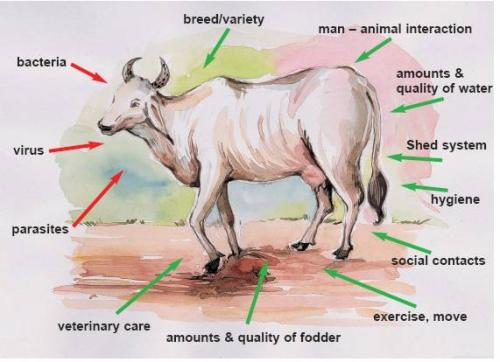
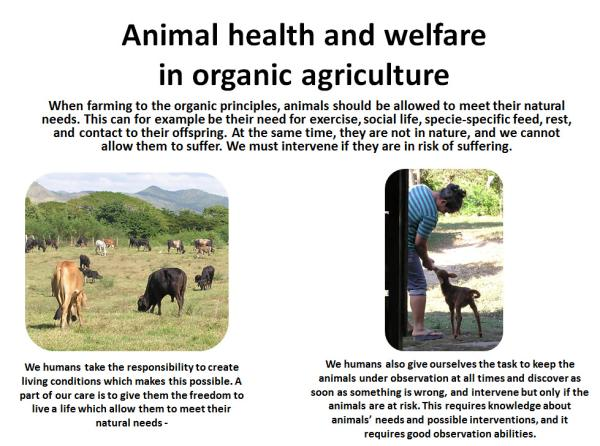

Animal health promotion, welfare and disease prevention (IFOAM Norms)

{kind=link}
{kind=link}
Organic management practices promote and maintain the health and well-being of animal through balanced organic nutrition, stress-free living conditions and breed selection for resistance to disease, parasites and infections.
Animal health promotion and disease prevention according to IFOAM Norms
Organic management practices promote and maintain the health and well-being of animal through balanced organic nutrition, stress-free living conditions and breed selection for resistance to disease, parasites and infections. (see IFOAM Norms, general Principle for Veterinary Medicine).
Factors influencing animal health and wellbeing
Health is a dynamic and ongoing process in all living individuals, which is coping with and responding to all the things we meet in the surrounding, which potentially could influence us. Disease causing germs, parasites and numerous stress factors are present in the lives of both humans and animals. All living organisms have an immune system which should be supported to cope with these germs. All forms of stress and pressure can disturb this.
Organic animal husbandry puts its focus on improving the living conditions of animals and promoting their health, so that their immune systems are strong and they are able to resist all the external factors which put them under pressure and stress. Every disease case should be handled and sick animals must be treated, and give cause to reflections whether something is wrong in the way we kept and treated the animal, and why the immune system of the animal was not able to fight the disease or the parasite attack.
Animal husbandry in organic farming is different from both extensive animal husbandry, which is often environmentally damaging (e.g. overgrazing of common lands), and from intensive animal husbandry which keeps animals under ethically unacceptable conditions.
|  |
| Factors influencing animal health: Bacteria, viruses and parasites attacking the farm animal which fights back with its immune system. The farmer can influence both sides of this balance |
| (c) Ifoam Training Manual for Organic Farming in the Tropics |
Animal welfare
Ideas about animal welfare began in ancient civilizations and exist in many religions and cultures today. Many countries incorporate some elements of animal protection in their laws. People's concerns about animal welfare are normally based on the idea that we should take steps to maximize the well-being of animals, especially wherever we use or interact with them. This includes animals in the wild, those we keep as pets, those we use as entertainment or in research, and those that we use for food. Some in society disagree with the use of animals by people and believe that they should be afforded basic rights in society so as not to be misused by humans.
Most people agree that animals have an intrinsic value and an interest in being free from suffering. It is our responsibility to ensure that we uphold the wellbeing of animals whenever our activities impact on them. This means ensuring that they have access to fresh water and a suitable diet, a suitable environment, the ability to express natural behaviors, and to be protected from suffering, fear, distress, pain, injury, and disease.
Regardless of where you stand, interest in animal welfare is on the rise in our society, as it gains more attention in research areas, the media, and politically.
Animal welfare in organic agriculture
The view on animal welfare in organic agriculture is guided by the organic principles, that take animal health and welfare issues seriously and are summarized in the chapters below. We take the IFOAM Norms as a reference, which give some rather detailed guidelines on how to keep animals.
Animals are an important component of an organic farm. They form part of a system in which all parts interact to their mutual benefit. However, until recently more attention was paid to crops, soil fertitliy, plant health and the design of crop rotation, and animals were not a high priority. This is surprising as Farm animals make important contributions to organic farming systems. With the negative side-effects of intensive and industrial animal production became a major driving force behind the advance of animal welfare standards.
Animals are fundamentally different than crops
Opposed to crops, animals are also sentient beings with feelings. This aspect of the animals requires special considerations. This makes their management fundamentally different from that of crops: "When a farmer is learning to manage a farm with no chemical inputs, sometimes a field may become overgrown with weeds, for example. The farmer might not be able to do much about it, and may simply accept the loss as an inevitable part of learning how to farm organically. However, it is not acceptable to let animals suffer or die." (Vaarst et al., 2004).
Animal welfare can be defined and understood in different ways. As a minimum, it can be understood as a state in which animals are free of disease, pain, suffering, discomfort and stress and that they should be free to behave naturally in their environment. Good animal welfare therefore requires disease prevention and veterinary treatment, appropriate shelter, management, nutrition, humane handling and humane slaughter/killing.
To ensure all this is both important in organic and conventional animal husbandry, but the organic principles go further than that. Organic livestock farming should allow as much naturalness as possible, and this goes further than the behavior and comprises also feeding, breeding and avoiding mutilations. This is not the same as 'living in nature': the animals do not live in nature, and we took them into our households. We are therefore responsible for intervening when they need it, and be able to know when they need it.
Signs that an animal has a good state of welfare can include longevity, having low levels of disease, displaying normal behavior, and reproducing normally.
Taking care of animals requires considerable knowledge and experience, which is also an important part of a well-working organic agricultural system. People who interact with animals must have the skills and knowledge needed to best provide for the animals in their care.
|  |
| Animal health and welfare in organic farming |
| (c) Mette Vaarst |
Animal health promotion
In the following, we will introduce the organic understanding of health promotion and disease handling (disease prevention and treatment) on a general level.
Under the Animal Species Files, more specific guidelines and descriptions are given, both of the animal's natural needs and signs of imbalance, as well as of relevant interventions.
It is crucial in organic animal herds to promote health through fundamental management, as stated in IFOAMs Norms.
The operator shall take all practical measures to ensure the health and wellbeing of the animals through preventative animal husbandry practices such as:
- Selection of appropriate breeds or strains of animals;
- Adoption of animal husbandry practices appropriate to the requirements of each species, such as regular exercise and access to pasture and/or open-air, runs, to encourage the natural immunological defense of animal to stimulate natural immunity and tolerance to diseases;
- Provision of good quality balanced organic feed;
- Appropriate stocking densities;
- Grazing rotation and management.
Animal health promotion can be understood as all forms and types of support which we as humans can give to the animals in our care in order to keep them healthy on all levels. Animal health promotion is not targeting a specific disease, but the whole animal, its health and wellbeing. In addition, it is also things as simple as access to fresh air, access to exercise, high hygiene and clean water: everything which supports the general health of the animal.
Animal disease prevention
Similar to crop health, organic animal husbandry puts the main emphasis on preventive measures in order to keep animals healthy, rather than on curative methods. This starts from keeping robust breeds rather than high performing and susceptible ones. Secondly, the conditions in which the animals are kept should be optimal ones, providing sufficient space, light and air, dry and clean beddings, frequent exercise (e.g. grazing) and proper hygiene etc. The need for adequate and high quality fodder and a balanced diet cannot be understated in ensuring the health of animals. Instead of feeding highly priced commercial concentrates which make animals grow faster and produce more, a natural diet balanced in fiber and other nutrients appropriate to the requirements of the animal should be provided.
Where all these preventive measures are taken, animals will rarely fall sick. Veterinary treatment thus should play only a secondary role in organic farming. If treatment is necessary, alternative medicine based on herbal and traditional remedies should be used. Only if these treatments fail or are not sufficient, can synthetic medicines (e.g. antibiotics) be used.
Read more about routines involving e.g. vaccines and other interventions in the Chapter about Disease prevention

| In organic animal agriculture, health promotion (which is basically expressed in step 1 and 2) and preventive measures (mostly expressed in step 2) are the most crucial focus areas, and only when this fails, immediate and supportive intervention should take place and animals should be treated and cared for. Treatment should be done preferably with non-chemical or so-called 'alternative remedies' or treatment regimes |
| (c) IFOAM Training Manual for Organic Farming in the Tropics
|
Animal welfare and our duty to care
Animal welfare refers to the state of the animal; the treatment that an animal receives is covered by other terms such as animal care, animal husbandry, and humane treatment (OIE, Terrestrial Animal Health Code 2010). 'Duty of Care' is an obligation for people to take reasonable measures to protect the welfare of any animals that their activities may impact upon.
Achieving good animal welfare relies on providing animals with:
- Freedom from hunger or thirst, by providing access to fresh water and an appropriate diet;
- Freedom from fear and distress, through appropriate treatment and surroundings;
- Freedom from discomfort, by providing appropriate environments in which to live;
- Freedom from pain, injury or disease, by prevention and rapid diagnosis and treatment;
- Freedom to express natural behavior, by providing appropriate space, facilities, and social interactions with members of their own species.
Examples what duty of care means for different groups:
1. For Individuals who own, use or take care for animals, duty of care means:
- Appropriately catering for their needs and preventing suffering;
- Being aware of the relevant laws and guidelines governing animal welfare for each species;
- Ensuring that animals do not impact negatively on other animals or humans.
2. For Industry groups:
- Encouraging standards of best practice in their members;
- Participating in research aimed at improving animal welfare;
- Participating in the development of animal use guidelines.
3. For Governments:
- Maintaining standards of welfare in their jurisdictions through development and enforcement of legislation; - Promoting high standards of welfare in trade;
- Developing animal welfare strategies, across local, state and national levels;
- Promoting animal welfare related research.
4. Duty of care of Animal welfare organizations:
- Raising awareness of animal welfare issues and encouraging best practice;
- Encouraging research in animal welfare areas;
- Participating in the development of animal use guidelines;
- Enforcing animal welfare legislation, such as the RSPCA Inspectorate.
Review process
- Dr. Mette Vaarst, veterinarian, and Gidi Smolders, agronomist, orgANIMprove
- Muhammad Kiggundu, Makerere University
- Aage Dissing
- Inge Lis Dissing
Information source links
- Global perspectives on animal welfare: Africa, W.N. Masiga & S.J.M. Munyua, Rev. sci. tech. Off. int. Epiz., 2005, 24 (2), 579-586
- IFOAM Norms and Standards, 2014. Full title: 'The IFOAM NORMS FOR ORGANIC PRODUCTION AND PROCESSING' Version 2014. Die Deutsche Bibliothek - CIP Cataloguing-in-Publication-Data. ISBN 978-3-940946-99-7. Pp 134. www.ifoam.org
- IFOAM Training Manual for Organic Agriculture in the Tropics http://shop.ifoam.org
- Vaarst, M; Roderick, S.; Lund, V. et al. (2004): Animal Health and Welfare in Organic Agriculture, CAB International, Wallingford, UK.
- OIE (World Organization for Animal Health). Chapter 7.1. Introduction to the recommendations for animal welfare. Terrestrial Animal Health Code 2012